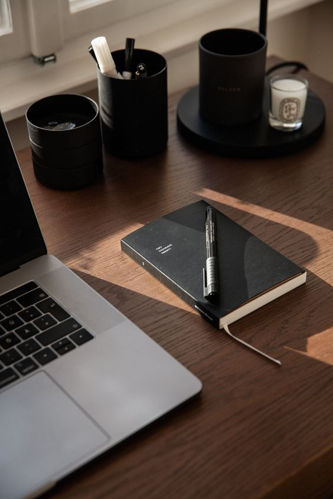

From Full-Time Student to Working Student: How the Pandemic Changed My Life
by Angelo Tristan Sinohin
Introduction
The COVID-19 pandemic brought unexpected changes to all our lives. For me, it marked a significant transition from being a full-time student with a typical routine to a working student balancing both work and academics. This shift wasn’t just about adjusting to new responsibilities; it also brought a profound change in my lifestyle, time management, and outlook on life.
Pre-Pandemic Life: The Student Routine
Before the pandemic, my life as a student was straightforward. My days revolved around attending classes, hanging out with friends, and spending long hours on hobbies such as basketball, playing video games, and doing after-school work. My biggest worry was whether I could submit my assignments on time or prepare well enough for midterms. Free time was abundant, and my schedule, though busy, was predictable.
The Pandemic Shift: Remote Learning and New Realities
When the pandemic hit, I decided to take a year off from studying because I wasn’t really a fan of remote learning. Everything changed suddenly the classroom was replaced by a screen, and my interactions with classmates and professors were limited to video calls and chat messages. The shift to remote learning was challenging staying motivated while sitting in my bedroom all day wasn’t easy. Yet, it also offered flexibility, and with this newfound flexibility, an opportunity arose: the chance to start working alongside my studies.
The Decision to Work: A New Challenge
Taking on a job while still being a student was a big decision. I needed to help support my family, and the flexibility of remote work made it possible. But the reality of juggling both responsibilities hit hard. Suddenly, my days were filled with back-to-back Zoom meetings, project deadlines, and shifts at work. The balance between school and work became a tightrope walk, and time management became a critical skill I had to master quickly.
A Day in My Life: Then vs. Now
Then: My pre-pandemic days were structured around my classes. I had time to review lecture notes, participate in group studies, and even enjoy some downtime scrolling through social media or watching Netflix.
Now: My current routine is a whirlwind of activity. Mornings often start early with school, attending classes. Afternoons are spent attending virtual meetings with my co-workers and working in general. Evenings are divided between finishing assignments and completing work-related projects. There’s little time for leisure, and I’ve had to become more disciplined with my schedule to keep up with everything.
The Impact on Lifestyle and Time Management
The transition from being a full-time student to a working student has completely altered my lifestyle. Sleep schedules have shifted, my social life has taken a backseat, and the importance of self-discipline has never been more apparent. I’ve had to learn to prioritize tasks and make sacrifices whether that’s cutting down on leisure activities or waking up earlier to get everything done. Days off are spent either resting or doing schoolwork that is due or preparing for upcoming exams.
But this experience has also taught me resilience and adaptability. I’ve developed better organizational skills and learned the value of time in a way I hadn’t before. Each hour of the day counts, and managing it effectively has become essential.
Lessons Learned and Looking Forward
While balancing work and studies has been challenging, it’s also been incredibly rewarding. I’ve gained practical experience, built my resume, and learned to handle real-world responsibilities while still pursuing my education. It hasn’t been easy, but the growth I’ve experienced makes the struggle worthwhile. It has not only helped me financially but also opened my mind to what life might be like after I graduate from college the ups and downs, the challenges of work.
Looking forward, I know that these experiences will benefit me in the long run. The skills I’m developing now time management, multitasking, resilience are ones I’ll carry with me throughout my career and will become my strengths in the future.
Conclusion
The journey from being a full-time student to a working student during the pandemic was not what I anticipated, but it’s one that has shaped me profoundly. The challenges have pushed me to grow, and though the balance is tough, the rewards are even greater. As I continue to navigate this path, I’m learning to adapt, stay resilient, and make the most of every opportunity that comes my way.
References
- Image Source: Click Here